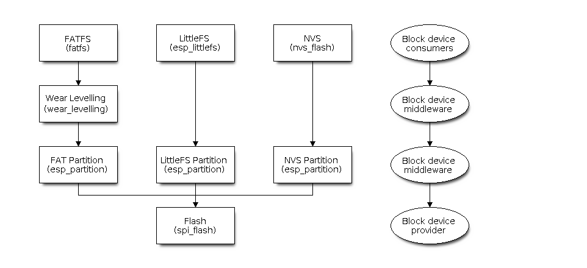

Block Device Layer
Overview
The Block Device Layer (BDL) defines a C interface that lets storage-oriented components exchange data without custom-made adapters. Each block device exposes this interface in the form of an esp_blockdev_handle_t handle giving access to device flags, geometry information, and a set of supported operations as defined in components/esp_blockdev/include/esp_blockdev.h. Higher-level code inspects that metadata and may invoke the available callbacks to perform I/O operations.
The unified interface makes it possible to compose BDL stacks supporting storage use-cases by chaining multiple universal components. A driver provides a handle representing access to the physical device; a middleware component consumes this handle, augments behaviour (for example splits the space on the device or adds wear levelling capability), and exposes a new handle to the next layer. The topmost components of the chain like file-systems are pure device consumers. This model allows filesystems, middleware, and physical drivers to be mixed and matched as long as every layer honours the interface contracts described below.

Example Block Device Layer Stack
Using Block Devices
Handles
Block devices are accessed through esp_blockdev_handle_t. Handles are obtained from the owning component via the <component>_get_blockdev() convention and must be released with the matching <component>_release_blockdev() helper once the device is no longer needed. Treat handles as opaque: only use the public API in components/esp_blockdev/include/esp_blockdev.h, and do not move or modify the memory they reference.
Geometry and Flags
Each device publishes an esp_blockdev_geometry_t structure that reports capacity together with minimum read, write, and erase granularities. Optional recommended sizes act as performance hints but must not replace alignment checks against the mandatory values. The accompanying esp_blockdev_flags_t structure advertises properties such as read-only media, encryption, or erase-before-write requirements. Middleware can change apparent geometry size, but must verify upon creation that the underlying layer fits its requirements, and ensure that the underlying device will only be accessed correctly.
Operations
The esp_blockdev_ops_t structure defines callbacks for read, write, erase, sync, ioctl, and release. Before invoking a callback, callers must ensure that the given pointer is not NULL; a NULL pointer indicates that the operation is not supported. Callers are responsible for validating alignment and bounds using the geometry data and for respecting flag-driven requirements such as issuing an erase before writing to NAND-like media.
Typical Flow
Acquire a handle from a driver or middleware provider.
Inspect geometry and flags to determine required alignment, available capacity, and special handling.
Issue read, write, erase, and sync requests through the operation table that the provider exposes.
Forward the handle to higher components or release it once all operations complete.
Example
esp_blockdev_handle_t dev = my_component_get_blockdev();
const esp_blockdev_geometry_t *geometry = dev->geometry;
if (dev->ops->read && (sizeof(buffer) % geometry->read_size) == 0) {
ESP_ERROR_CHECK(dev->ops->read(dev, buffer, sizeof(buffer), 0, sizeof(buffer)));
}
if (dev->ops->release) {
ESP_ERROR_CHECK(dev->ops->release(dev));
}
Contracts
Flags (esp_blockdev_flags_t)
Flags are initialised once during device creation and must remain immutable for the lifetime of the handle.
read_onlyrequires write, erase, and mutating ioctl commands to fail with an error such asESP_ERR_INVALID_STATE.encryptedsignals that on-media data is encrypted; higher layers must not assume plaintext visibility or transparent mapping.erase_before_writetells callers that a successful write requires an erase of the target range beforehand. If multiple write operations are issued to the same range without an erase operation in-between, the behavior is undefined, but will likely result in data corruption.and_type_writesignals NAND/NOR-style behavior: programming only clears bits (1→0) and effectively storesexisting_bits & new_bits. Bits that are already zero remain zero even if the write request supplies ones; erasing first is the only way to restore them.default_val_after_eraseidentifies whether erased regions read as0x00or0xFFso middleware can keep sentinel values consistent.
Geometry (esp_blockdev_geometry_t)
disk_sizeis the total accessible capacity in bytes; operations must reject any request whose end offset exceeds this value.read_size,write_size, anderase_sizeare mandatory alignment units, in bytes; both offsets and lengths must align to the corresponding size before the operation runs.Recommended sizes improve throughput when callers honour them but cannot replace the minimum alignment checks; implementations must accept any request that respects the required granularity.
When a user sees read-write and read-only variants of the same underlying device, the geometry must be identical aside from the
read_onlyflag. In particular,read_size,write_size, anderase_sizeshould match between the two variants;recommended_*values are expected to match and should differ only when there is a clear benefit to doing so (and should be documented in such cases).
Operations (esp_blockdev_ops_t)
read(dev_handle, dst_buf, dst_buf_size, src_addr, data_read_len)Behaviour: Upon success copies exactly
data_read_lenbytes intodst_buf.Preconditions:
dst_bufis valid,src_addranddata_read_lenare aligned toread_size,src_addr + data_read_len <= disk_size, anddata_read_len <= dst_buf_size.Postcondition: Returns
ESP_OKwhen the copy succeeds or propagates a relevantESP_ERR_*code on failure.
write(dev_handle, src_buf, dst_addr, data_write_len)Preconditions: Device is not
read_only;src_bufspans at leastdata_write_lenbytes; offset and length align towrite_sizeand stay withindisk_size.Behaviour: When
erase_before_writeis set, callers must issue anerasebeforehand. Whenand_type_writeis set, the hardware applies a bitwise AND with the existing contents, so the stored result becomesold_value & new_value; bits cleared by earlier writes stay cleared unless the range is erased first.Postcondition: Returns
ESP_OKonce the requested range has been accepted by the device (data may still reside in intermediate buffers untilsyncruns). Misaligned, out-of-range, or read-only attempts should surfaceESP_ERR_INVALID_ARGorESP_ERR_INVALID_STATE, and implementations must avoid leaving the range partially updated.Note: On devices with
and_type_writewrites depend on the existing contents, so reading the same (or overlapping) range immediately after a write may require a precedingsyncto ensure that cached data reflects the fully merged value.
erase(dev_handle, start_addr, erase_len)Preconditions: Device permits erases;
start_addranderase_lenalign toerase_size; the range remains insidedisk_size.Postcondition: The range reads back as
default_val_after_eraseon success. Misaligned or out-of-range requests should returnESP_ERR_INVALID_ARG; hardware failures are expected to bubble up using driver-specificESP_ERR_*codes.
sync(dev_handle)Flushes pending writes. Devices that omit this callback operate with write-through semantics.
Postcondition: All previously reported writes reach stable storage before
ESP_OKis returned (this includes all underlying devices). Timeouts or transport issues should surface asESP_ERR_TIMEOUTor another relevantESP_ERR_*.
ioctl(dev_handle, cmd, args)Command identifiers 0x00–0x7F are reserved for ESP-IDF system use; 0x80–0xFF are available for user-defined extensions.
Each command defines its own payload layout; because
argsis avoid *, wrappers can only validate or reinterpret the buffer for commands they understand, and must otherwise treat the payload as opaque.Wrappers that cannot service a command should forward it unchanged to the next device in the stack when available; only the bottom device is expected to return
ESP_ERR_NOT_SUPPORTEDfor unrecognised commands.When the stack contains non-transparent address mapping, forwarding commands that embed raw addresses is inherently unsafe: intermediate layers cannot translate opaque payloads, so behaviour is undefined and will typically fail. Such commands should either be blocked explicitly or documented as unsupported in stacked configurations.
release(dev_handle)Optional destructor that frees device resources. The function must be idempotent so that repeated calls either succeed or return a benign error like
ESP_ERR_INVALID_STATE.
Error Handling
Callbacks return ESP_OK on success and should propagate ESP_ERR_* codes unchanged to help callers diagnose failures. Middleware and applications are expected to propagate errors from underlying devices rather than masking them inside the stack. NULL function pointers should be treated as "operation not supported".
Validation
Implementations should include tests that cover alignment checks, flag-driven behaviour (read-only, erase-before-write, NAND-style writes), and correct propagation of errors through stacked devices. Middleware that wraps lower handles must also verify that handle lifetime management remains consistent across the stack.
API Reference
Header File
This header file can be included with:
#include "esp_blockdev.h"
This header file is a part of the API provided by the
esp_blockdevcomponent. To declare that your component depends onesp_blockdev, add the following to your CMakeLists.txt:REQUIRES esp_blockdev
or
PRIV_REQUIRES esp_blockdev
Structures
-
struct esp_blockdev_cmd_arg_erase_t
Input arguments for erase-related block-device ioctl commands.
Pass a pointer to this structure as the
argsargument to esp_blockdev_ops_t::ioctl when using ESP_BLOCKDEV_CMD_MARK_DELETED or ESP_BLOCKDEV_CMD_ERASE_CONTENTS. Bothstart_addranderase_lenmust be aligned to esp_blockdev_geometry_t::erase_size for the target device.Public Members
-
uint64_t start_addr
Byte offset of the range from the start of the device.
Must be a multiple of esp_blockdev_geometry_t::erase_size.
-
size_t erase_len
Length of the range in bytes.
Must be a multiple of esp_blockdev_geometry_t::erase_size.
-
uint64_t start_addr
-
struct esp_blockdev_flags_t
Block device property flags (
esp_blockdev_flags_t)Various properties and characteristics of a BDL device. Represented as a
structwhen__DOXYGEN__is defined (for documentation only) and as aunionin normal builds.Note
The macros
ESP_BLOCKDEV_FLAGS_CONFIG_DEFAULTandESP_BLOCKDEV_FLAGS_INST_CONFIG_DEFAULTprovide a typical configuration for ESP-IDF components that expose a BDL interface. Use them as a starting point for custom initializers.Public Members
-
bool read_only
no erase/write operations allowed
-
bool encrypted
the device data is encrypted
-
bool erase_before_write
erasing required before any write operation
-
bool and_type_write
0-bits cannot be changed to 1-bits (NAND/NOR flash behavior)
-
bool default_val_after_erase
default bit value after erasing (0 or 1)
-
bool reserved[27]
Reserved for future blockdev flags
-
uint32_t val
Raw bitfield view for bulk initialization
-
bool read_only
-
struct esp_blockdev_geometry_t
Block device geometry.
Granularity and capacity parameters for read, write, and erase operations on the device.
Public Members
-
uint64_t disk_size
Total addressable size of the device in bytes.
Mandatory for every block device.
-
size_t read_size
Minimum read transaction size in bytes.
Mandatory. All read lengths and offsets must respect this granularity where required by the driver.
-
size_t write_size
Minimum write transaction size in bytes.
Mandatory for read/write devices; set to
0for read-only devices.
-
size_t erase_size
Minimum erase granularity in bytes.
Mandatory for read/write devices; set to
0for read-only devices.Note
Often corresponds to the logical sector size used by file systems.
-
size_t recommended_write_size
Suggested write chunk size in bytes for best performance.
Set to
0if not used. Optional hint for upper layers.
-
size_t recommended_read_size
Suggested read chunk size in bytes for best performance.
Set to
0if not used. Optional hint for upper layers.
-
size_t recommended_erase_size
Suggested erase chunk size in bytes for best performance.
Set to
0if not used. Optional hint for upper layers.Note
Often matches the physical erase block of the underlying flash or similar media.
-
uint64_t disk_size
-
struct esp_blockdev_ops_t
Block device operations.
Function table for read, write, erase, sync, ioctl, and release on a block device instance.
Public Members
-
esp_err_t (*read)(esp_blockdev_handle_t dev_handle, uint8_t *dst_buf, size_t dst_buf_size, uint64_t src_addr, size_t data_read_len)
Read data from the device.
Reads the requested number of bytes from the device at the given offset into the output buffer.
- Parameters
dev_handle Target device handle
dst_buf Output buffer to receive the data read
dst_buf_size Size of the destination buffer (in bytes)
src_addr Source address for the read (offset in the device's address space)
data_read_len Data read length (in bytes)
- Return value
ESP_OK on success
Another
esp_err_terror code on failure
-
esp_err_t (*write)(esp_blockdev_handle_t dev_handle, const uint8_t *src_buf, uint64_t dst_addr, size_t data_write_len)
Write data to the device.
Writes the requested number of bytes from the input buffer to the device at the given offset.
- Parameters
dev_handle Target device handle
src_buf Input buffer providing the data to write
dst_addr Destination address for the write (offset in the device's address space)
data_write_len Length of the data to be written (in bytes)
- Return value
ESP_OK on success
Another
esp_err_terror code on failure
-
esp_err_t (*erase)(esp_blockdev_handle_t dev_handle, uint64_t start_addr, size_t erase_len)
Erase an address range on the device.
Erases the address range
[start_addr, start_addr + erase_len). Botherase_lenandstart_addrmust be aligned to multiples of the erase block size in bytes (erase_sizein esp_blockdev_geometry_t). The implementation may use one or more internal operations, depending on the device. The result must be that data in the range is no longer readable as previously written content.- Parameters
dev_handle Target device handle
start_addr Start address for the erase operation
erase_len Length of the address range to erase (in bytes)
- Return value
ESP_OK on success
Another
esp_err_terror code on failure
-
esp_err_t (*sync)(esp_blockdev_handle_t dev_handle)
Commit pending writes to the device.
Commits all pending writes and blocks until they complete. Does nothing if the device does not cache writes.
- Parameters
dev_handle Target device handle
- Return value
ESP_OK on success
Another
esp_err_terror code on failure
-
esp_err_t (*ioctl)(esp_blockdev_handle_t dev_handle, const uint8_t cmd, void *args)
Device-specific I/O control.
Each command has parameters that the handler must validate. Implementations may extend commands within these ranges:
0x00-0x7F: IDF device commands (system)
0x80-0xFF: user-defined commands
Refer to the
ESP_BLOCKDEV_CMD_macros in this header.- Parameters
dev_handle Target device handle
cmd Command ID
args Command-specific arguments
- Return value
ESP_OK on success
Another
esp_err_terror code on failure
-
esp_err_t (*release)(esp_blockdev_handle_t dev_handle)
Release resources for this device handle.
- Parameters
dev_handle Target device handle
- Return value
ESP_OK on success
Another
esp_err_terror code on failure
-
esp_err_t (*read)(esp_blockdev_handle_t dev_handle, uint8_t *dst_buf, size_t dst_buf_size, uint64_t src_addr, size_t data_read_len)
-
struct esp_blockdev
Generic IDF block device interface.
Describes a block device that supports common disk operations and exposes parameters needed to integrate it into a component stack.
Note
The context pointer
ctxholds driver-private data; the BDL layer does not interpret it.Note
The
opstable may be shared by multiple instances of the same driver type.Public Members
-
void *ctx
Owner-provided context; not interpreted by the BDL layer
-
esp_blockdev_flags_t device_flags
Capabilities and requirements
-
esp_blockdev_geometry_t geometry
Operation granularity and capacity
-
const esp_blockdev_ops_t *ops
Function table implementing the device
-
void *ctx
Macros
-
ESP_BLOCKDEV_FLAGS_CONFIG_DEFAULT()
Brace-enclosed initializer for
esp_blockdev_flags_twith typical ESP-IDF defaults.
-
ESP_BLOCKDEV_FLAGS_INST_CONFIG_DEFAULT(flags)
Assign typical ESP-IDF default values to an existing
esp_blockdev_flags_t.See also
- Parameters:
flags -- Flags instance to initialize (statement form, not an expression)
-
ESP_BLOCKDEV_HANDLE_INVALID
Sentinel for an invalid block device handle.
Compare handles to
NULL; this macro expands toNULLfor readability.
Type Definitions
-
typedef struct esp_blockdev esp_blockdev_t
Forward declaration; see esp_blockdev
-
typedef esp_blockdev_t *esp_blockdev_handle_t
Opaque handle to a block device instance.
Pointer to esp_blockdev. This is the only public identifier for a BDL instance: it is returned from the device factory and must be released through esp_blockdev_ops_t::release when no longer needed.